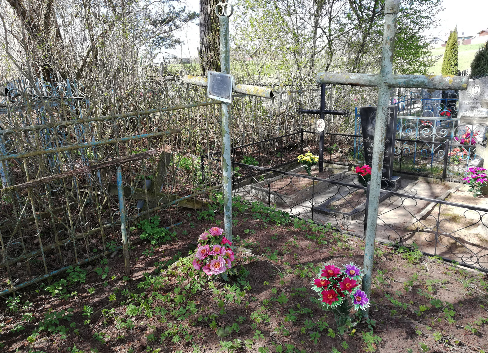
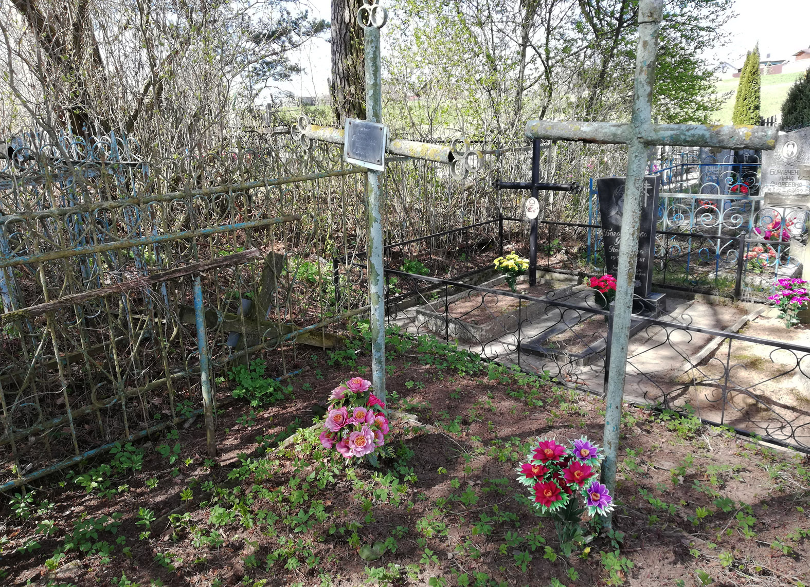
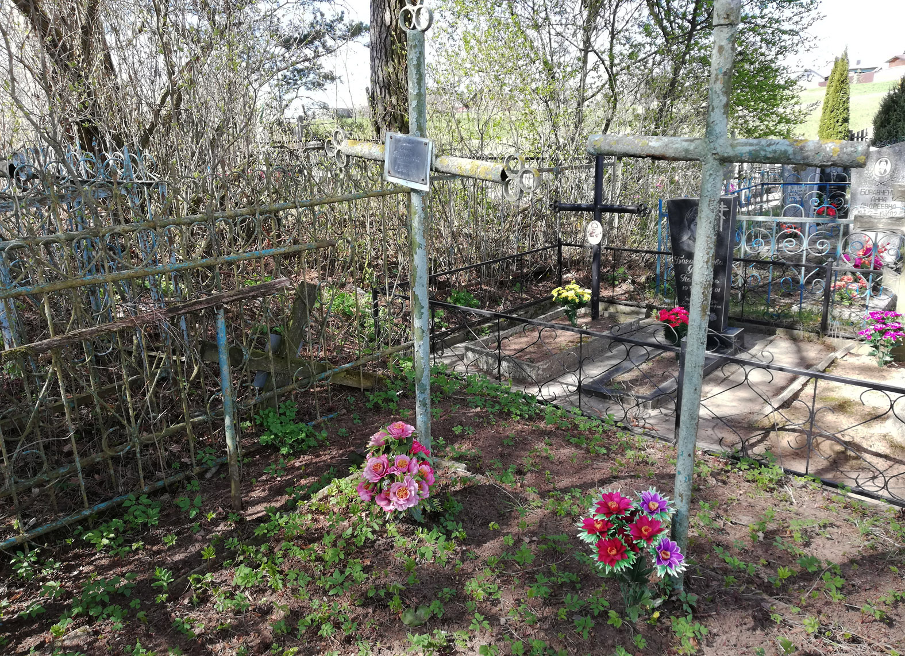

Информация № 67: Магіла Навумавых
1. Месца і дата пахавання:Рэспубліка Беларусь, Віцебская вобл., Віцебскі раён, в. Мазалава Мазалаўскі с/с
2. Тып пахавання: брацкае пахаванне
3. Памеры пахавання: Шырыня – 2 м, даўжыня – 3 м
4. Кароткае апісанне пахавання: металічны крыж з шыльдачкай
5. Колькасць пахаваных: 4 (?)
6. Персанальныя звесткі: Навумава А.Г., Навумава В.І., Навумаў І.І., Навумаў М.І., Навумаў С.І.
7. Дадатковая інфармацыя: На Плятнішчанскіх могілках, на горцы, у магіле пахавана растраляная немцамі сям’я Навумавых. Сям’я Навумавых жыла на хутары. Навумава Аксіння Гаўрылаўна, Навумава Валянціна Іванаўна, Навумаў Іван Іванавіч, Навумаў Мікалай Іванавіч, Навумаў Сяргей Іванавіч былі расстраляны на сваім хутары на Вербную нядзелю ў 1943 г., тамсама і пахаваны на полі. Сын Васіль, як прыйшоў з войска паставіў крыж, потым перапахаваў на могілкі ў в. Плятнішча. На 1960-я гады было на самым ускрайку могілак. Пра яе пісаў Д.Р. Газін у газеце “Ленінская праўда” у артыкуле “Трагедыя ў Мілаве” //ЛП. – 1990. – 24 крас. (№ 49). – С. 2, Імёны адзначаны ў “Кніга Памяць Віцебскага раёна”. Пахаванне адзначана металічным крыжом. Раней на была шыльдачка, на якой фарбай напісана прозвіша і тое, што сям’я “загінулі ад рук фашысцкіх палачоў”. Цяпер прымацавана невялікая з нержавейкі з надпісам: «Семья Наумовых погибшая в 1943 году». Пахаванне даглядаецца, прыбрана расліннасць, стаяць штучныя кветкі, цукерачкі. Паказаў магілу І.І. Марчанка.
